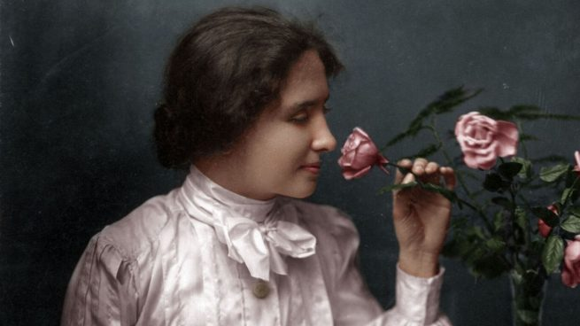

Hellan Keller
1880-1968
Out of a World of Darkness and Silence,She Brought Hope to Millions
"The Best and most beautiful things in the world cannot be seen or even touched - they must be felt with heart."
Here's a time line of Hellen Keller's Life
- 1880- Born in Tuscumbia on June 27
- 1881-At the Age of 19 Months lost Sight and hearing as a result of meningitis
- 1886-Recognized by alexander graham bell as being exceptionally bright
- 1887- Began instructions under anne sullivan
- 1888-Learned to read and write in braille
- 1899-Mark Twain Recognized her great intellect and discouraged spirit despite her blindness and deafness
- 1904-First blind/deaf college graduate to gradute from radcliffe college
- 1908- Published the world i live in
- 1946-Helen visited over 35 different countries,she spoke on behalf of disabled people,and many governments opened schools for the blind and deaf because of her.
- 1956-First woman to recieve an honarary degree from harvard university
- 1968-Helen died at age of 88 .Her name and spirit lived on in all the good things that she accomplished.she paved the way for those with disanilities around the world.